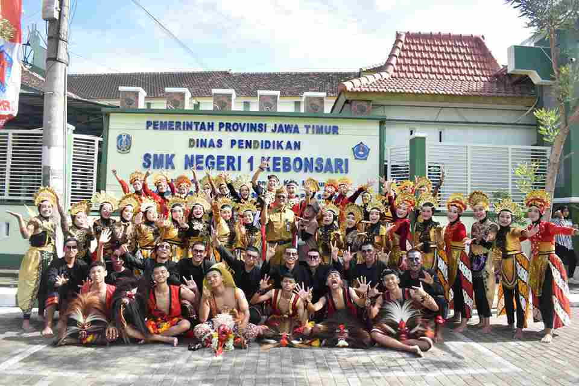

SMKN 1 KEBONSARI, merupakan salah satu Sekolah Menengah Atas Negeri yang berada di Madiun SMKN 1 Kebonsari beralamat di Ds. Kedondong, Kecamatan Kebonsari, Kabupaten Madiun, Jawa Timur, Indonesia.

VISI SMKN 1 KEBONSARI
”Terwujudnya Sekolah Menengah Kejuruan yang berkarakter, bermutu, terampil, berdaya saing dalam kebekerjaan dan peduli terhadap lingkungan hayati.”
Misi SMKN 1 KEBONSARI
1.kepribadian akhlak mulia dengan melatih, membimbing, dan mendidik siswa dalam rangka penguasaan ilmu pengetahuan dan teknologi.
2.Membina dan mengembangkan potensi peserta didik, sehingga mampu menggali keunggulan lokal peserta didik
3.Menjadikan sarana belajar yang memadai untuk mencapai bembelajaran yang maksimal.
4.Menyediakan lingkungan yang bersih, sehat dan berwawasan adiwiyata mandala
5.Mewujudkan warga sekolah yang bertanggungjawab dalam upaya perlindungan dan pengelolaan lingkungan